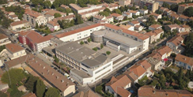

- La start-up Hease Robotics, basée à Villeurbanne (69 s'apprête à déployer un robot Heasy à la gare TGV d'Aix-en-Provence.
- Comme les galeries commerciales et les magasins qui commencent à s'équiper de robots, le lycée Pasquet désire se doter d'un robot d'accueil.

Notre étude portera sur la gestion automatisée de l'aération des serres.
Créé avec HelpNDoc Personal Edition: Créer des aides HTML, DOC, PDF et des manuels depuis une même source